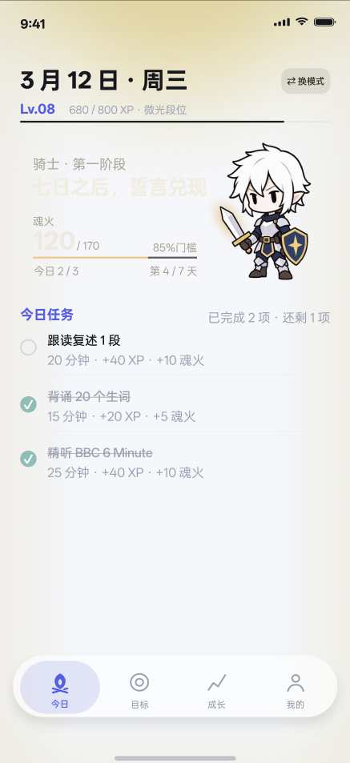
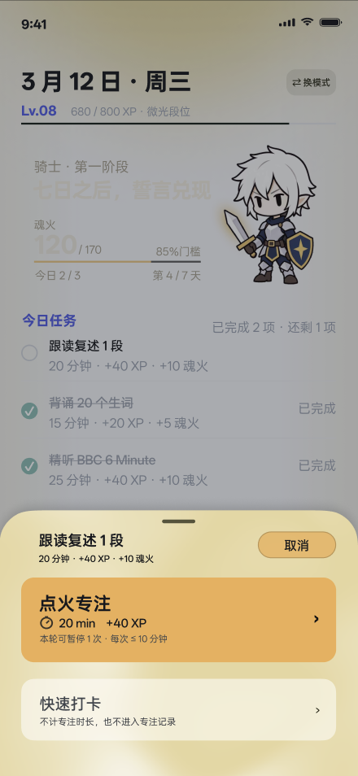
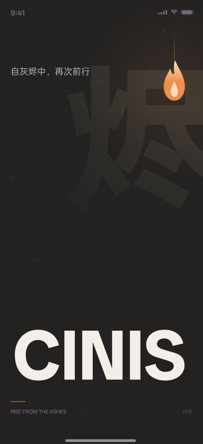
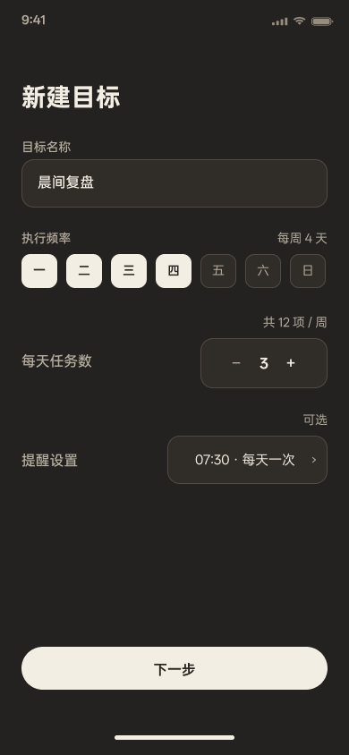
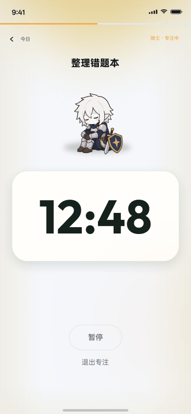
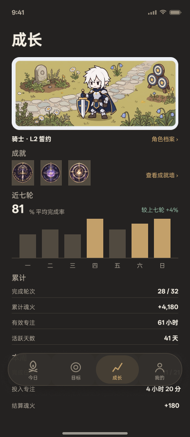

打卡流程
按步骤体验任务选择与打卡反馈。
待办和已完成任务在同一张列表里。每项任务标注预计时长、经验值和魂火，方便在开始前了解任务要求。

点开任务后，可以启动计时，也可以直接记录完成。界面明确提示快速打卡不计专注时长。
成功弹窗先确认任务和时长，再显示获得的经验值和魂火。“继续”用于返回任务流程。
启动与角色选择
从启动画面进入旅者、骑士、深渊三种角色选项。

目标、专注与成长
从 Figma 原稿选出的三张界面，展示一次打卡之前和之后的体验。


